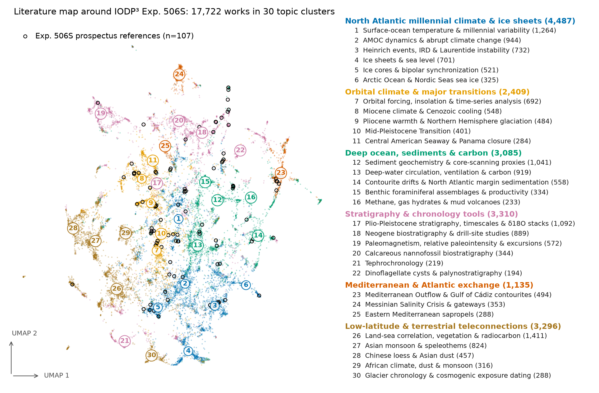
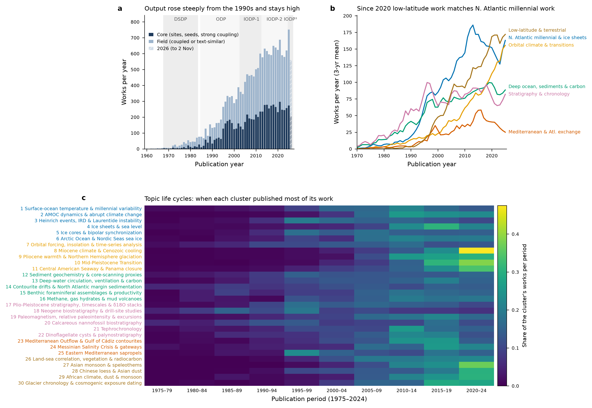
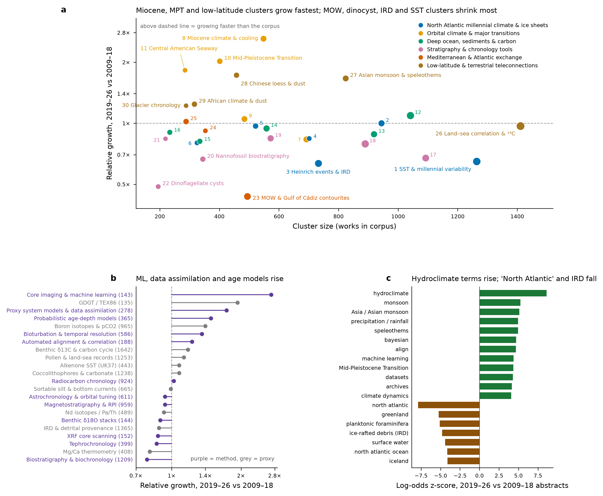
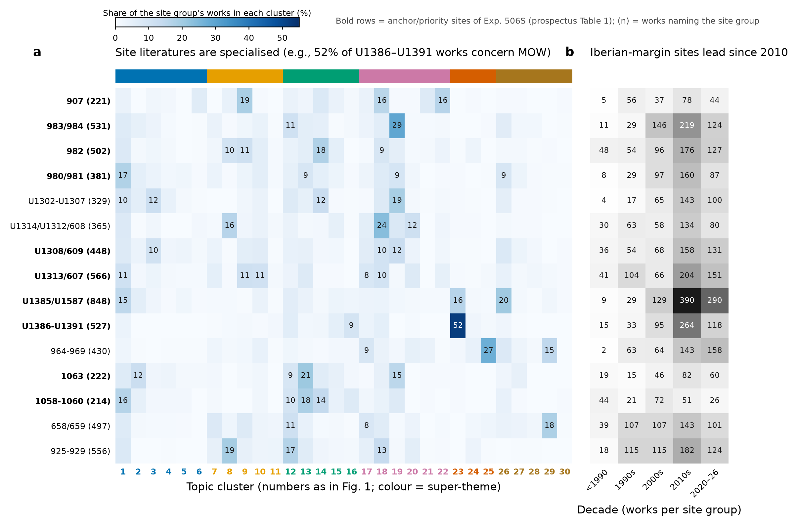
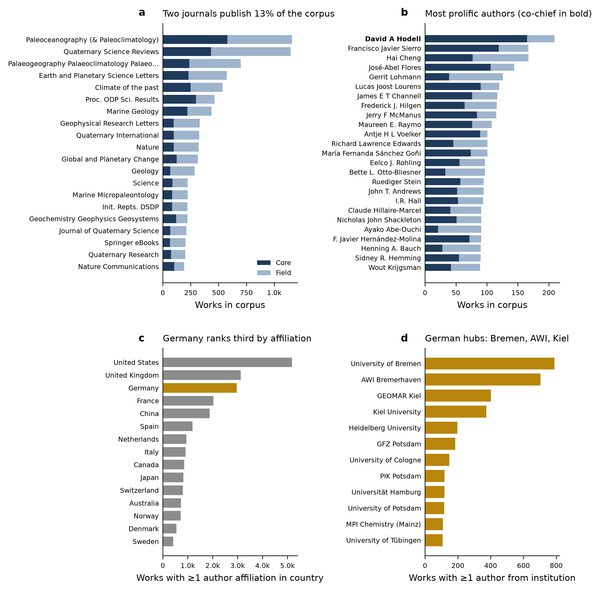

In brief
The literature that bears on IODP³ Expedition 506S — the SPARC project that integrates North Atlantic DSDP/ODP/IODP legacy sites into a 4-D stratigraphic framework for orbital- and millennial-scale climate since the late Miocene (Hodell & Seki 2026) — comprises, in this map, 17,722 works in 30 topic clusters: 7,342 core works (the 107 prospectus references, works that name one of the 30 target sites, and works tightly citation-coupled to the prospectus references) and 10,380 field works (citation-coupled or textually close to the core). Four results stand out. The expedition's own knowledge base sits on stratigraphy, orbital forcing and North Atlantic millennial variability: the prospectus references concentrate in the sediment-geochemistry/core-scanning (12), orbital-forcing/time-series (12), Heinrich-event/IRD (11) and Neogene drill-site (10) clusters. The North Atlantic millennial super-theme peaked around 2013 (~186 works per year, 3-yr mean) and since 2020 has been matched by work on low-latitude and terrestrial teleconnections. The fastest-growing method facets map directly onto the SIGNALS methodological objectives (M2, M3, M5–M7) — core imaging and machine learning (2.7×), proxy system models and data assimilation (1.7×), probabilistic age-depth models (1.5×), bioturbation and temporal resolution (1.35×) and automated alignment (1.2×). And the literatures of the individual legacy sites are topically specialised, which is the fragmentation the expedition sets out to overcome.
Scope and sources#
The search scope was taken from the Scientific Prospectus: its 30 Table 1 sites (12 anchor/priority sites: 907, 980, 981, 982, 983, 984, 1058, 1063, U1308, U1313, U1385, U1391; 18 reference sites: U1587, U1387, U1302–U1307, U1314, 607, 609, 659, 967, 968, 925–928; 607/U1313 and 609/U1308 are re-occupations of the same locations), its paleoclimate objectives P1–P6 and its methodological objectives M1–M7, and its 107 DOI-bearing references, which served as seed papers. Five retrieval routes fed one candidate pool:
- Site searches in OpenAlex full text for every site number ("Site 982", "U1313", "DSDP 607" and so on), plus title/abstract searches for site regions and drilling legs (Feni, Gardar, Björn and Eirik drifts, Orphan Knoll, Ceara Rise, Iberian margin, Gulf of Cádiz, Legs 94/108/151/154/160/162/172, Expeditions 303/306/339/397).
- Works citing the 58 ODP/IODP site and summary chapters of those legs (OpenAlex and OpenCitations).
- Twenty-three thematic query families, each mapped to a prospectus objective (millennial variability, AMOC, MPT/orbital, iNHG/Pliocene, late Miocene, cyclostratigraphy, stacks and age models, alignment algorithms, XRF scanning, core imaging/ML, bioturbation, proxy system models and data assimilation, marine–ice–terrestrial correlation, magnetostratigraphy, carbonate cycle, Mediterranean Outflow, ice sheets, SST, interglacials, tephra, biostratigraphy, cross-timescale interactions, gateways), run in OpenAlex and Semantic Scholar.
- The citation graph of the seeds: works citing at least two seeds (OpenCitations) and works cited by at least two seeds (Crossref reference lists).
- Metadata enrichment of every candidate from OpenAlex (abstracts, references, authorships), with Crossref and Semantic Scholar filling abstract gaps.
From 41,468 OpenAlex records plus 317 Semantic Scholar-only site records, 9,153 were excluded as off-topic or non-literature (datasets, peer-review comments, back matter) and 593 duplicates (preprint/article pairs) were merged. Each remaining work was assigned a tier. Core requires a seed, a site mention in paleo context, or strong coupling (citing or cited by ≥3 seeds). Field requires two independent signals: either ≥2 seed links, or textual similarity to the core at least as high as the core's own 20th percentile together with paleo-period or region context. All other topical hits form the periphery (14,317 works), delivered separately and not mapped. The exact queries, thresholds and the list of site chapters are in the summary workbook.
The map itself combines two views of each work: TF-IDF text vectors from title, abstract and keywords, and bibliographic-coupling vectors from shared references, each reduced to 200 SVD dimensions. These were clustered with k-means (k = 30) and projected with UMAP. Cluster names were assigned after reading each cluster's distinctive terms and its most-cited papers. Of the mapped works, 64% carry an abstract and 89% a DOI.
What the map shows#
Structure of the field#

The field resolves into six super-themes. North Atlantic millennial climate and ice sheets is the largest (4,487 works). It is followed by stratigraphy and chronology tools (3,310), low-latitude and terrestrial teleconnections (3,296), deep ocean, sediments and carbon (3,085), orbital climate and major transitions (2,409), and the Mediterranean with its Atlantic exchange (1,135). The most-cited works inside the clusters are the expected landmarks, for example the 0.5-Myr ODP 980 record of millennial variability (McManus et al. 1999), the benthic δ18O stack (Lisiecki & Raymo 2005), the astronomical solution (Laskar et al. 2004), and the Iberian-margin reference timescale (Hodell et al. 2015). Twelve clusters contain no prospectus reference at all, among them AMOC dynamics, ice sheets and sea level, land–sea correlation, Asian monsoon, Messinian, sapropels, tephra and nannofossil biostratigraphy. These are places where the expedition's own citation base is thin relative to the size of the literature it will touch.
Growth and emerging topics#

Output rose from about 132 works per year in 1990 to 288 in 2000, 501 in 2010 and 579–752 per year since 2015 (maximum in 2025); 2026 is partial (559 works to 2 November). The North Atlantic millennial super-theme peaked in 2013, and by the 3-yr mean low-latitude and terrestrial work has been at or above it every year since 2020 (172 vs 163 works per year in 2025). Mediterranean–Atlantic exchange peaked in 2016, after the Expedition 339 results.

Relative to the whole corpus, the clusters growing fastest (2019–26 vs 2009–18) are Miocene climate and Cenozoic cooling (2.6×), anchored by the astronomically dated Cenozoic reference record (Westerhold et al. 2020) and late Miocene cooling (Herbert et al. 2016). They are followed by the Mid-Pleistocene Transition (2.0×; Clark et al. 2006; Willeit et al. 2019), the Central American Seaway (1.8×) and Asian loess and monsoon (1.7×). The classic North Atlantic legacy-site topics shrink in relative terms: Mediterranean Outflow and Gulf of Cádiz contourites (0.44×), dinoflagellate cysts (0.49×), Heinrich events and IRD (0.63×), surface-ocean temperature and millennial variability (0.65×), and Plio-Pleistocene stratigraphy (0.67×). Abstract vocabulary tells the same story. "Hydroclimate" rose from 1.0% to 4.8% of abstracts and "Bayesian" from 1.0% to 2.5%, while "North Atlantic" fell from 32% to 22%.
The method facets give the proposal a concrete argument: the tools SIGNALS plans to deploy are where the field is moving. Core imaging and machine learning grew fastest of all facets, from a small base (143 works). They are followed by proxy system models and data assimilation, probabilistic age-depth models (Blaauw & Christen 2011; Lougheed & Obrochta 2019), bioturbation and temporal resolution (Anderson 2001), and automated alignment, from profile-HMM stacking and sequence alignment (Ahn et al. 2017; Lin et al. 2014) to Gaussian-process multiproxy alignment (Lee et al. 2019) and dynamic time warping (Hagen et al. 2020). Several classic facets are flat or declining in relative share: biostratigraphy (0.78×), Mg/Ca (0.80×), tephrochronology (0.86×), XRF scanning (0.87×) and benthic stacks (0.89×). The flat XRF value may reflect XRF scanning becoming routine and unmentioned in abstracts rather than less used.
The legacy sites#

The site groups with the largest literatures are U1385/U1587 (848 works), U1313/607 (566), the Ceara Rise sites 925–929 (556) and 983/984 (531). The smallest are 1058–1060 (214), 907 (221) and 1063 (222). Each site literature has a distinct topical signature. 52% of U1386–U1391 works concern Mediterranean Outflow (Voelker et al. 2006; Hernández-Molina et al. 2014). 29% of 983/984 works are paleomagnetic or RPI studies (Channell et al. 2009), and 27% of 964–969 works are about sapropels. U1385/U1587 splits between land–sea correlation (20%; Sánchez Goñi et al. 2002), Mediterranean Outflow (16%) and surface-ocean temperature (15%), and Ceara Rise between Miocene climate (19%) and sediment geochemistry (17%). Since 2010 the Iberian-margin group has accumulated the most literature (390 works in the 2010s, 290 in 2020–26), whereas the Blake Outer Ridge sites have the least recent activity (26 works since 2020). This siloing — one or two topics per site, few studies spanning many sites — is the quantitative version of the prospectus's premise that legacy records "have not been properly correlated and integrated across the entire North Atlantic". It also marks 1058–1060, 1063 and 907 as the least-studied anchor sites.
Venues, people and institutions#

Two journals, Paleoceanography (and Paleoclimatology) (1,161 works) and Quaternary Science Reviews (1,149), publish 13% of the corpus. They are followed by Palaeogeography, Palaeoclimatology, Palaeoecology (699), EPSL (574), Climate of the Past (537) and the ODP Scientific Results volumes (463). The most prolific author is the 506S co-chief David A. Hodell (209 works, 165 core), followed by F. J. Sierro (167), H. Cheng (167), J.-A. Flores (144), G. Lohmann (126), L. J. Lourens (120), J. E. T. Channell (117), F. J. Hilgen (116), J. F. McManus (115) and M. E. Raymo (108). Germany ranks third by affiliation (2,968 works, 16.7% of the corpus), after the US and UK. The German hubs are the University of Bremen (788), AWI (704), GEOMAR (401) and Kiel University (374), followed by Heidelberg (198), GFZ (184) and Cologne (148).
Cluster catalogue#
Growth is the 2019–26 vs 2009–18 publication ratio relative to the corpus as a whole (1.0× = average). Landmarks are the most-cited works within the corpus; the last column is the most corpus-cited work since 2019.
Swipe sideways to see all columns.
| # | Cluster | Works (core) | Median year | Growth | Main site groups | Landmarks | Recent anchor |
|---|---|---|---|---|---|---|---|
| 1 | Surface-ocean temperature & millennial variability | 1,264 (526) | 2011 | 0.65× | U1385/U1587, 980/981 | McManus et al. 1999; Fairbanks 1989 | Tierney et al. 2020 |
| 2 | AMOC dynamics & abrupt climate change | 944 (280) | 2015 | 1.00× | U1385/U1587, 1063 | McManus et al. 2004; Ganopolski & Rahmstorf 2001 | Menviel et al. 2020 |
| 3 | Heinrich events, IRD & Laurentide instability | 732 (429) | 2006 | 0.63× | U1308/609, U1302-U1307 | Bond et al. 1993; Bond et al. 1992 | Dalton et al. 2019 |
| 4 | Ice sheets & sea level | 701 (92) | 2016 | 0.84× | U1302-U1307, U1308/609 | Clark et al. 2009; Lambeck et al. 2014 | Batchelor et al. 2019 |
| 5 | Ice cores & bipolar synchronization | 521 (165) | 2009 | 0.97× | U1385/U1587, U1308/609 | Dansgaard et al. 1993; North Greenland Ice Core Project members 2004 | Bauska et al. 2021 |
| 6 | Arctic Ocean & Nordic Seas sea ice | 325 (94) | 2013 | 0.80× | 907, U1314/U1312/608 | Svendsen et al. 2004; Spielhagen 2004 | Kageyama et al. 2021 |
| 7 | Orbital forcing, insolation & time-series analysis | 692 (268) | 2007 | 0.83× | 658/659, U1313/607 | Heinrich 1988; Laskar et al. 2004 | Barker et al. 2022 |
| 8 | Miocene climate & Cenozoic cooling | 548 (243) | 2021 | 2.62× | 925-929, U1314/U1312/608 | Zachos et al. 2001; Westerhold et al. 2020 | Miller et al. 2020 |
| 9 | Pliocene warmth & Northern Hemisphere glaciation | 484 (234) | 2017 | 1.05× | U1313/607, 982 | Seki et al. 2010; Pagani et al. 2009 | de la Vega et al. 2020 |
| 10 | Mid-Pleistocene Transition | 401 (188) | 2019 | 2.03× | U1313/607, U1385/U1587 | Clark et al. 2006; Elderfield et al. 2012 | Willeit et al. 2019 |
| 11 | Central American Seaway & Panama closure | 284 (67) | 2018 | 1.83× | 925-929, 658/659 | Haug & Tiedemann 1998; Haug et al. 2001 | Kirillova et al. 2019 |
| 12 | Sediment geochemistry & core-scanning proxies | 1,041 (481) | 2007 | 1.09× | 925-929, 983/984 | Kroopnick 1985; McCave et al. 1995 | Lougheed & Obrochta 2019 |
| 13 | Deep-water circulation, ventilation & carbon | 919 (302) | 2011 | 0.88× | 1063, U1313/607 | Bond et al. 1997; Duplessy et al. 1988 | Sigman et al. 2021 |
| 14 | Contourite drifts & North Atlantic margin sedimentation | 558 (300) | 2005 | 0.94× | 982, U1302-U1307 | Rebesco et al. 2014; Faugères et al. 1999 | Stow & Smillie 2020 |
| 15 | Benthic foraminiferal assemblages & productivity | 334 (155) | 2010 | 0.81× | U1386-U1391, U1385/U1587 | Rasmussen et al. 1996; Schönfeld & Zahn 2000 | Gastaldello et al. 2023 |
| 16 | Methane, gas hydrates & mud volcanoes | 233 (134) | 2011 | 0.90× | U1386-U1391, U1385/U1587 | Somoza 2003; Pinheiro et al. 2003 | Bradbury & Turchyn 2019 |
| 17 | Plio-Pleistocene stratigraphy, timescales & δ18O stacks | 1,092 (403) | 2006 | 0.67× | U1313/607, 658/659 | Lisiecki & Raymo 2005; Shackleton et al. 1990 | Head 2019 |
| 18 | Neogene biostratigraphy & drill-site studies | 889 (493) | 1997 | 0.79× | U1314/U1312/608, 925-929 | Miller et al. 1991; Keigwin 1982 | Raffi et al. 2020 |
| 19 | Paleomagnetism, relative paleointensity & excursions | 572 (302) | 2012 | 0.84× | 983/984, U1302-U1307 | Kirschvink 1980; Tauxe 1993 | Channell et al. 2020 |
| 20 | Calcareous nannofossil biostratigraphy | 344 (160) | 2003 | 0.67× | U1314/U1312/608, U1313/607 | Raffi et al. 2006; Rio et al. 1990 | Bergen et al. 2019 |
| 21 | Tephrochronology | 219 (56) | 2012 | 0.84× | 907, 964-969 | Ruddiman & Glover 1972; Grönvold et al. 1995 | Giaccio et al. 2019 |
| 22 | Dinoflagellate cysts & palynostratigraphy | 194 (93) | 2011 | 0.49× | 907, U1313/607 | de Vernal et al. 2005; De Schepper et al. 2009 | Fersi et al. 2021 |
| 23 | Mediterranean Outflow & Gulf of Cádiz contourites | 494 (387) | 2013 | 0.44× | U1386-U1391, U1385/U1587 | Voelker et al. 2006; Hernández-Molina et al. 2014 | Sierro et al. 2020 |
| 24 | Messinian Salinity Crisis & gateways | 353 (80) | 2014 | 0.92× | 964-969, 925-929 | Krijgsman et al. 1999; Hodell et al. 2001 | Lirer et al. 2019 |
| 25 | Eastern Mediterranean sapropels | 288 (188) | 2008 | 1.02× | 964-969, 658/659 | Rossignol-Strick 1985; Rohling et al. 2015 | Amies et al. 2019 |
| 26 | Land-sea correlation, vegetation & radiocarbon | 1,411 (598) | 2014 | 0.97× | U1385/U1587, U1308/609 | Reimer et al. 2013; Blaauw & Christen 2011 | Reimer et al. 2020 |
| 27 | Asian monsoon & speleothems | 824 (244) | 2019 | 1.67× | 658/659, U1308/609 | Wang et al. 2001; Wang et al. 2008 | Corrick et al. 2020 |
| 28 | Chinese loess & Asian dust | 457 (156) | 2016 | 1.73× | U1313/607, 658/659 | Porter & An 1995; Sun et al. 2006 | Fang et al. 2020 |
| 29 | African climate, dust & monsoon | 316 (172) | 2017 | 1.24× | 658/659, 964-969 | deMenocal et al. 2000; deMenocal 1995 | Skonieczny et al. 2019 |
| 30 | Glacier chronology & cosmogenic exposure dating | 288 (52) | 2017 | 1.22× | U1385/U1587, U1313/607 | Hughes et al. 2013; Schaefer et al. 2016 | Denton et al. 2021 |
Limitations#
The main OpenAlex retrieval ran after a temporary connection outage; the citation graph therefore combines OpenCitations, Crossref and OpenAlex links, and Proceedings chapters remain under-linked in all three (OpenAlex links only 471 works to the 58 site chapters). Full-text site searches depend on OpenAlex full-text coverage, so site literatures are lower bounds. Tier thresholds are heuristics: in random spot checks about 21 of 25 core and 22–25 of 30 field works were judged on-topic, so the field tier should be read as context, not as a curated reading list. Cluster boundaries are one k-means partition, and labels are interpretations. Cluster 16 (methane, mud volcanoes) and part of cluster 14 entered through Gulf of Cádiz and Rockall region searches and are peripheral to 506S. Growth indices are relative shares within this corpus and are sensitive to indexing lags for 2025–26. Author counts use OpenAlex display names, so name variants split counts, and a few OpenAlex publication years are wrong (IntCal13 is listed as 2010; catalogue citations were checked against Crossref).
Files#
- Exp506S_interactive_literature_map.htmlHTML · 20.1 MB — interactive topic map (opens offline in any browser): click a point for its APA 7 reference (copy button, DOI link, RIS export), search by author/title/DOI/site, filter by cluster, tier and year, and lasso-select regions to get a copyable APA reference list or a RIS file for Zotero/Citavi/EndNote.
- data/Exp506S_literature_corpus.csvCSV · 28.7 MB — the mapped corpus (17,722 rows): identifiers, bibliographic fields, tier, cluster and super-theme, site groups named, method/proxy facets, seed-coupling counts, within-corpus citations, UMAP coordinates and abstracts.
- data/Exp506S_corpus_summary_tables.xlsxXLSX · 54 KB — summary workbook with sheets for the cluster catalogue (key papers per cluster), facet and term trends, venues, authors, institutions (including Germany), countries, site × cluster and site × decade matrices, the full search strategy, and the site chapters used.
- data/Exp506S_literature_corpus.xlsxXLSX · 12.0 MB — the same corpus as an Excel workbook (opens directly in Excel with any locale; abstracts truncated at 4,000 characters as in the CSV).
- Data dictionary (below) — column definitions for the CSV/Excel files, tier rules and workbook sheets.
- data/Exp506S_periphery_candidates.csvCSV · 3.4 MB — periphery candidates (14,317) ranked by textual similarity to the core, for checking recall.
- Figures: figures/fig1_topic_map.png topic map; figures/fig2_publication_trends.png publication trends; figures/fig3_venues_authors.png venues, authors and institutions; figures/fig4_emerging_topics.png emerging topics; figures/fig5_sites_topics.png sites × topics.


Data dictionary#
Exp506S_literature_corpus.csv / .xlsx (17,722 works)#
CSV encoding: UTF-8, comma-separated, one header row. In Excel use Data → From Text/CSV or open the .xlsx copy.
| Column | Meaning |
|---|---|
| openalex_id | OpenAlex work ID (W…); empty for the 317 Semantic Scholar-only site records |
| doi | DOI (lower case, without https://doi.org/) |
| title | Title |
| year | Publication year (OpenAlex; occasional metadata errors) |
| first_author | First author (OpenAlex display name) |
| authors | Up to 10 authors, "; "-separated, "et al." if more |
| n_authors | Number of authors |
| venue | Journal/series (drilling proceedings normalised from DOI prefixes) |
| type | OpenAlex work type |
| tier | core | field (see tier rules below) |
| is_prospectus_reference | TRUE for the 107 DOI-bearing references of the Exp. 506S Scientific Prospectus |
| cluster_id | Topic cluster 1–30 (numbering as in Fig. 1 and the README catalogue) |
| cluster_label | Cluster name |
| super_theme | One of six super-themes |
| site_groups | Site groups the work names (full text, title/abstract, region or leg searches, or citations of site chapters) |
| sites_named_in_title_abstract | Individual Table 1 sites found by the parser in title/abstract |
| method_proxy_facets | Method/proxy facets matched in title/abstract/keywords (regexes in the workbook sheet method_proxy_facets) |
| cited_by_count_openalex | Total citations in OpenAlex |
| local_citations_in_corpus | Citations received from other works in this corpus |
| n_prospectus_refs_cited | Number of prospectus references this work cites (OpenAlex + OpenCitations) |
| n_prospectus_refs_citing_it | Number of prospectus references that cite this work (OpenAlex + Crossref) |
| text_similarity_to_core | Mean cosine similarity (TF-IDF) to the 10 most similar core works |
| umap_x / umap_y | Coordinates in the topic map (Fig. 1) |
| query_families | Retrieval routes/queries that returned the work (ft_ = OpenAlex full text, ta_ = OpenAlex title/abstract, s2_ = Semantic Scholar, citation_pool, cites_site_chapter) |
| source | openalex | s2_only |
| url | DOI link or landing page |
| abstract | Abstract (OpenAlex, else Crossref/Semantic Scholar; truncated at 4,000 characters; publisher boilerplate removed) |
Tier rules#
- core: prospectus reference; or names a Table 1 site (or its region/leg) in a paleo context; or cites/is cited by ≥3 prospectus references.
- field: not core, in paleo context, not exclusively pre-Miocene, and either ≥2 links to prospectus references or text similarity to the core ≥ the core's own 20th percentile plus paleo-period or region terms (or 1 seed link plus a thematic hit and similarity ≥ the 10th percentile).
- periphery (separate file, not mapped): other thematic hits that pass the context filter.
Exp506S_periphery_candidates.csv (14,317 works)#
Columns: openalex_id, doi, title, year, first_author, venue, cited_by_count_openalex, query_families, text_similarity_to_core (sorted descending).
Exp506S_corpus_summary_tables.xlsx#
| Sheet | Content |
|---|---|
| clusters | 30-cluster catalogue: size, core count, prospectus references, median year, growth index, top terms, main site groups, key papers, most-cited since 2019 |
| method_proxy_facets | Facet counts 2009–18 vs 2019–26, growth index, matching regex |
| emerging_terms | Rising/falling abstract terms (log-odds z-scores, document shares) |
| venues / authors / institutions / institutions_Germany / countries | Rankings by number of works |
| site_x_cluster / site_x_decade | Works per site group by topic cluster and by decade |
| search_strategy | All query strings and sources |
| site_chapters_used | The 58 ODP/IODP site and summary chapters used for forward-citation searches |